Префектура Нагано · Омати и Мацумото · рёканы
KAI Alps и KAI Matsumoto: деревенский онсэн у Северных Альп и сутки «современного тодзи»
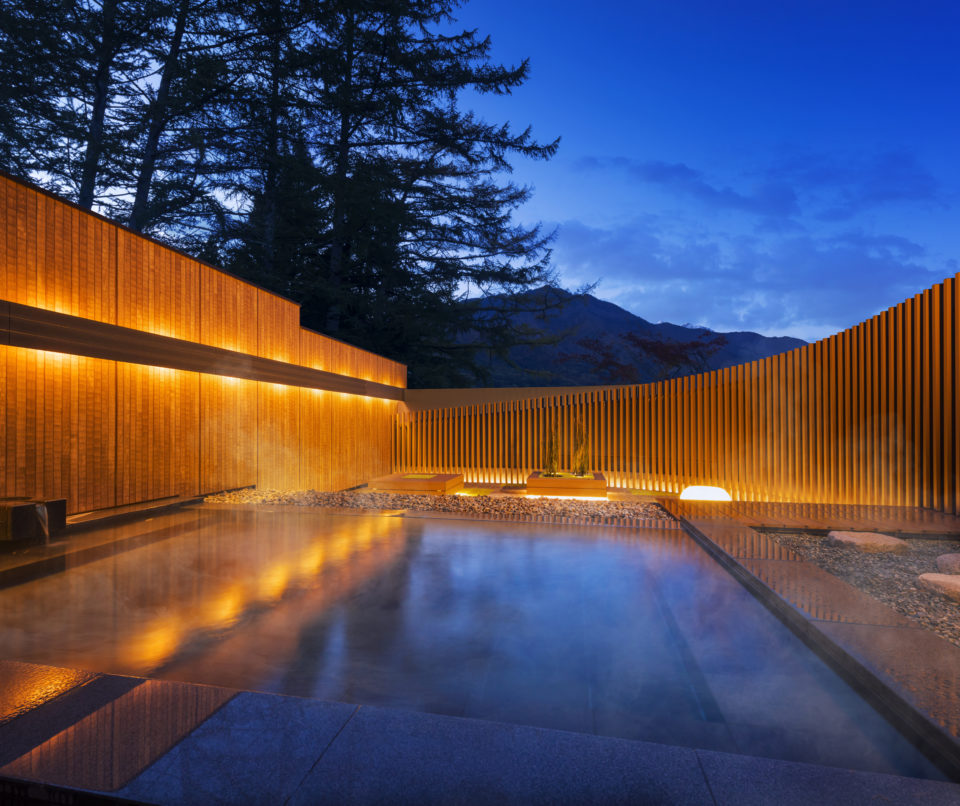
KAI это сеть онсэнов компании Hoshino Resorts, где каждый рёкан строят вокруг культуры своего края. В префектуре Нагано их два: KAI Alps в горном онсэне Омати и KAI Matsumoto в онсэне Асама на окраине Мацумото, где в 2018 году предлагали отдых на водах по расписанию.
Омати
Онсэн у ворот Северных Альп
Северные Альпы тянутся вдоль запада префектуры Нагано, и среди их могучих вершин есть Яригатакэ и Хотакадакэ. Онсэн Омати лежит у самого подножия этого хребта. По японским меркам он молод: горячую воду сюда провели по трубам между 1955 и 1964 годами. На территории около 40 гектаров онсэны и гостиницы стоят на просторных участках, не теснят друг друга и не спорят с лесом вокруг.
21 декабря 2017 года здесь после обновления открылся KAI Alps. Его девиз звучит как «онсэн, где можно почувствовать роскошь деревни Синсю»: горы со всех сторон, горячая вода и уют старого японского дома. Через весь рёкан проходит «ганги», крытая галерея, какие строят в снежных краях, чтобы ходить вдоль домов, не выходя в сугробы. По обе стороны галереи стоят 48 номеров и корпус с купальнями.
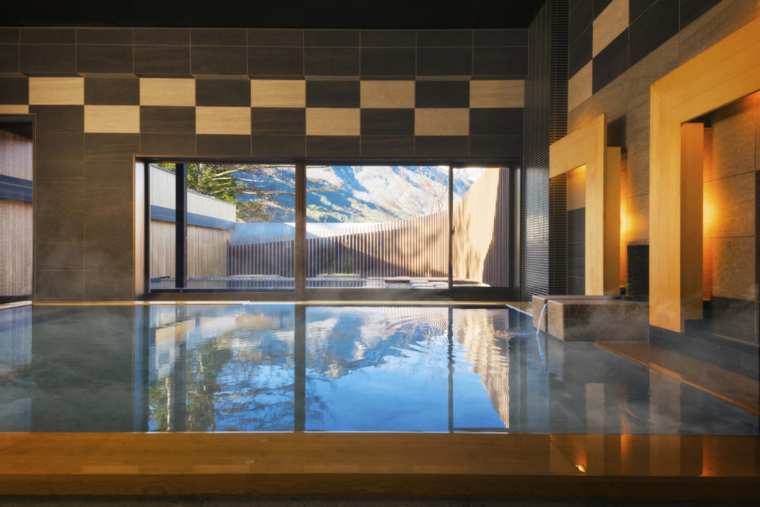
Купальни
Горы из открытой воды
Главное, ради чего едут в KAI Alps, это открытая купальня с видом на Северные Альпы. Общие бани окружены лиственничным лесом. И в крытые, и в открытые купальни воду ведут из обильного источника в ущелье Такасэ. Весной на лиственницах проклёвываются почки, летом лес свежо зеленеет, осенью становится золотым, а зимой стоит белый под снегом. Вид из воды хорош в любой сезон.
Деревня
У очага, как в старом доме
В KAI Alps стараются передать тепло деревенского гостеприимства Синсю. Сердце рёкана это ирори, открытый очаг, который помнит всю его историю. Здесь угощают местными пирожками ояки, печёными яблоками и подогретым сакэ, а на земляном полу рядом можно запустить деревянный волчок или пожонглировать отэдама, тряпичными мешочками с крупой.
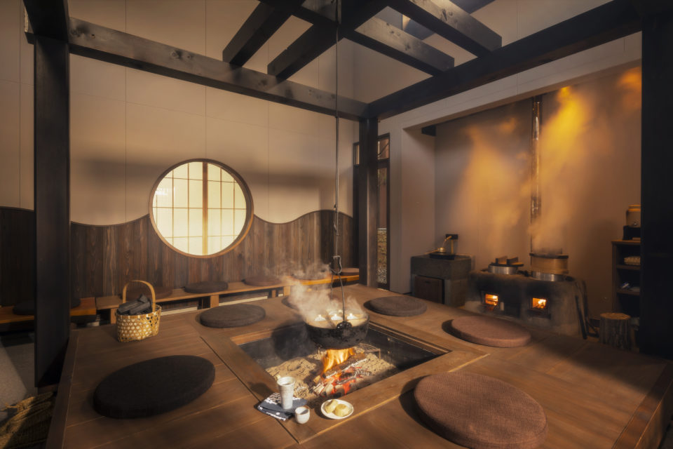
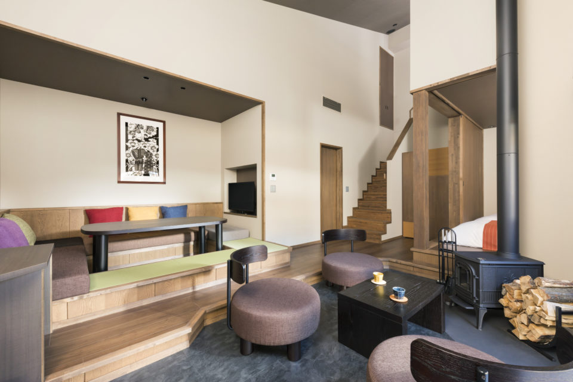
В 2018 году у KAI было 14 рёканов по всей Японии, и в каждом был «местный номер», где о культуре края рассказывают сами вещи. В KAI Alps это фонари из местной бумаги васи «Мацудзаки» и картины из резаной бумаги, которые делает художник из этих мест.
Ужин в 2018 году строился вокруг «юки-набэ», «снежного котелка», задуманного как образ тающего альпийского снега, а вокруг него подавали блюда кайсэки.
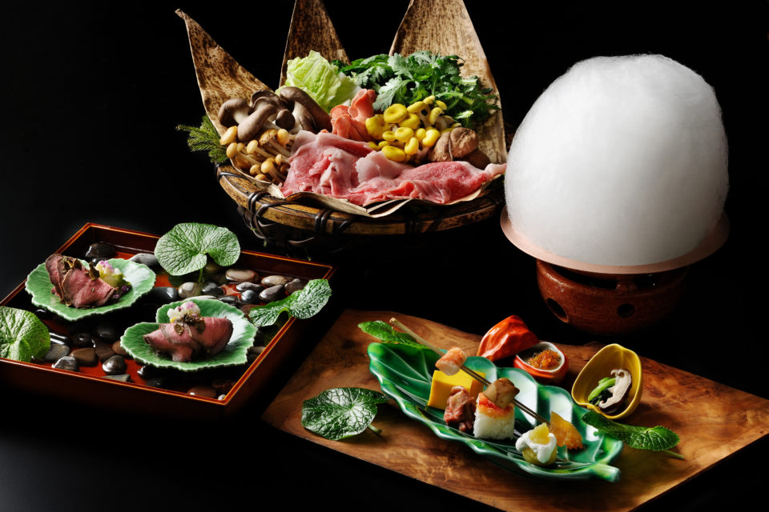
Зимой занятий не меньше, чем летом: в 2018 году гостям предлагали посидеть в снежной хижине камакура и пройтись по снегу в кандзики, старинных плетёных снегоступах. Камакуру сотрудники лепят сами, и в снежный год она вырастает до трёх или четырёх метров. Внутри горят фонари и хватает места, чтобы посидеть семьёй. От рёкана удобно ехать на Альпийский маршрут Татэяма Куробэ и на горнолыжные склоны Хакубы, так что KAI Alps хорош и зимой.
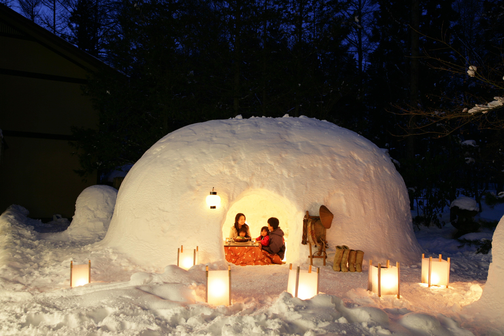
KAI Alps
- Адрес
- префектура Нагано, Омати, Тайра, 2884-26
- Телефон
- 0570-073-011 (центр бронирования KAI)
- Номера
- 48
- Цены / Вход
- ночь с ужином и завтраком от 23 000 иен на человека при двух гостях в номере (налог и налог на онсэн включены)
- Заезд / выезд
- 15:00 / 12:00
- Как добраться
- от станции JR Синано-Омати около 15 минут на машине; от съезда Адзумино автодороги Нагано около 60 минут на машине
Тодзи
KAI Matsumoto: сутки на водах
Тодзи, долгое пребывание на горячих источниках ради здоровья, это давняя японская традиция. В рёканах KAI её приспособили к современному ритму жизни и назвали «современным тодзи»: даже одна ночь здесь выстроена так, чтобы наутро проснуться с новыми силами. В 2018 году мы прожили такие сутки в KAI Matsumoto, в онсэне Асама на окраине Мацумото.
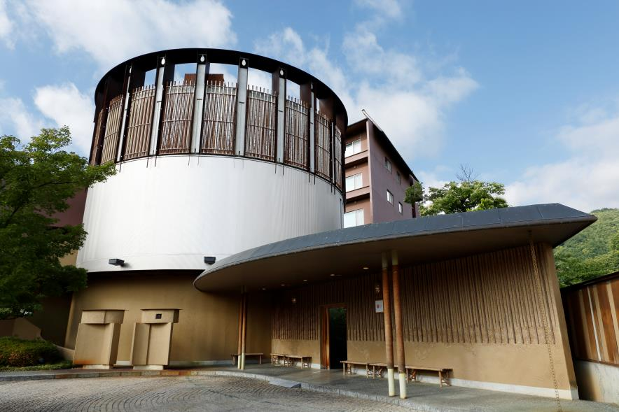
15:00. Заселение
Мацумото слывёт городом ремёсел: каждый май здесь проходит ярмарка «Крафт-фэр Мацумото». Местным номером в KAI Matsumoto в 2018 году была «Аудио-крафт рум», где ремесло встречалось с музыкой: деревянные фигуры в виде музыкальных инструментов, авторские стулья, своя открытая купальня, терраса и сад.
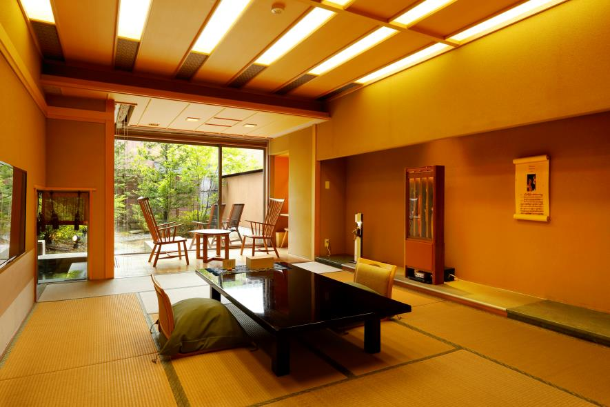
15:30. Восемь видов купален
Кроме крытых и открытых купален здесь была ванна из опилок японского кипариса и другие, всего 8 видов и 13 способов купаться. Две бани, «Китэн» и «Сёун», в разное время суток отдавали то мужчинам, то женщинам. Каждый день проходило занятие, где сотрудник учил правильно принимать ванну: только для женщин, не больше двух человек, с 15:30, запись в тот же день.
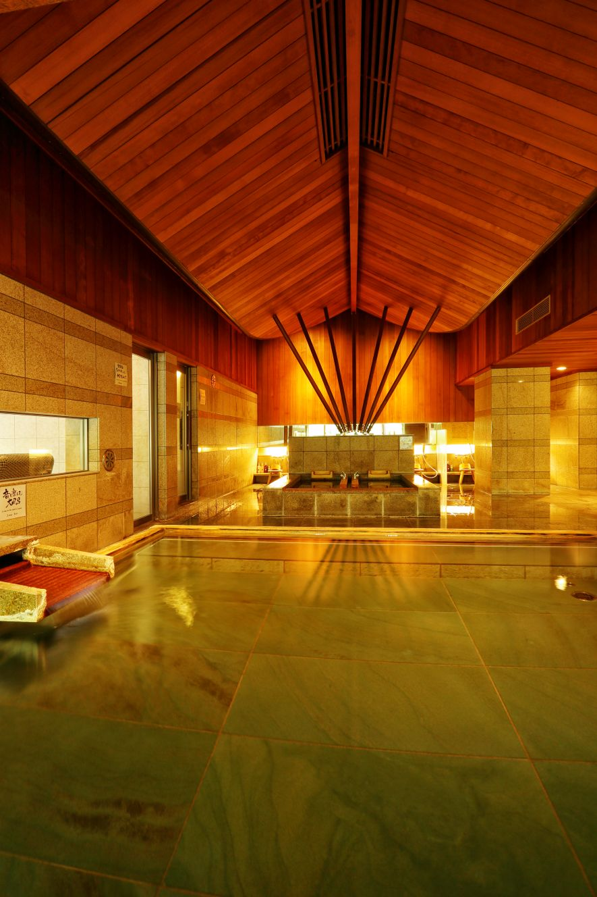
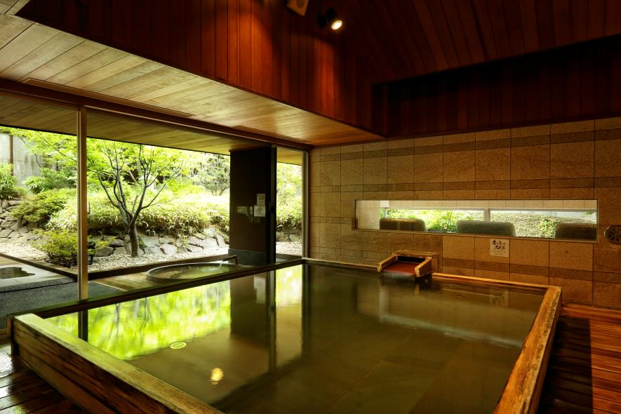
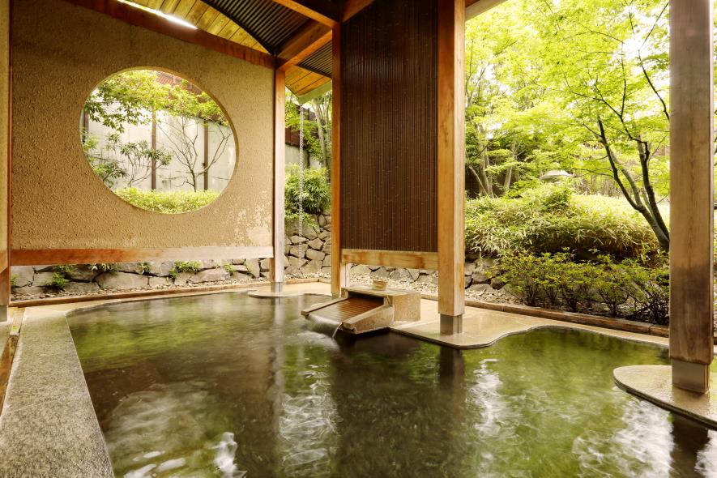
16:30. Отдых после бани
При каждой бане была комната отдыха с видом на внутренний двор. Там стояли массажные кресла, косметика для ухода за кожей и напиток из карина, японской айвы: экстракт разводят втрое, и он хорошо восполняет витамины. После купания стоит увлажнить кожу, выпить воды и дать телу отдохнуть.
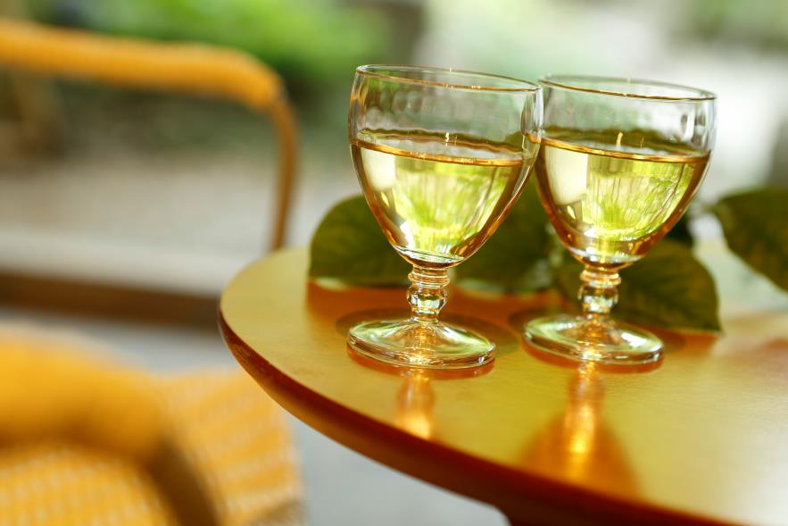
17:30. Ужин из местных продуктов
Ужином был «сезонный кайсэки» из продуктов своего времени года. Блюдо, которое подают в середине ужина, придумал главный шеф-повар Hoshino Resorts, у которого есть диплом сомелье: «шабу-шабу на красном вине». Бульон варят из говяжьих сухожилий и смешивают с прокипячённым вином Синсю. Ужин от первой закуски до десерта красив и хорошо сбалансирован по вкусу.
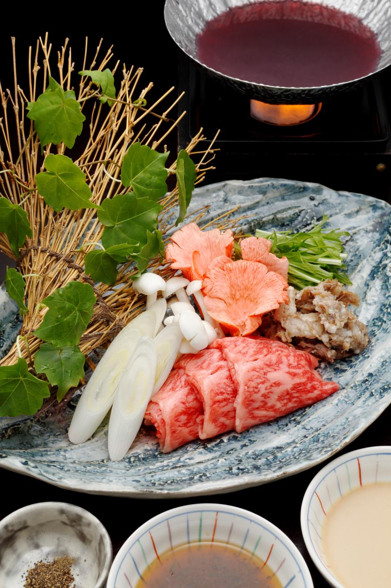
20:00. Снова в купальню
В купальне лежал листок с правилами KAI Matsumoto, их три. Дышать глубоко: вдох носом на четыре счёта, выдох ртом на восемь. Часто пить воду. Сидеть в горячей воде не дольше 20 минут. В номере ждал путеводитель по «современному тодзи», и с ним можно ещё раз пойти в баню.
21:15. Концерт в лобби
Высокое лобби отделано в технике «кира-дзури», старинной печати со слюдяным порошком. В 2018 году здесь каждый вечер играли местные музыканты: гитара, фортепиано, флейта, больше всего джаза и классики.
«Звук отражается внутри купола, здесь замечательная обстановка»
музыканты, игравшие в лобби
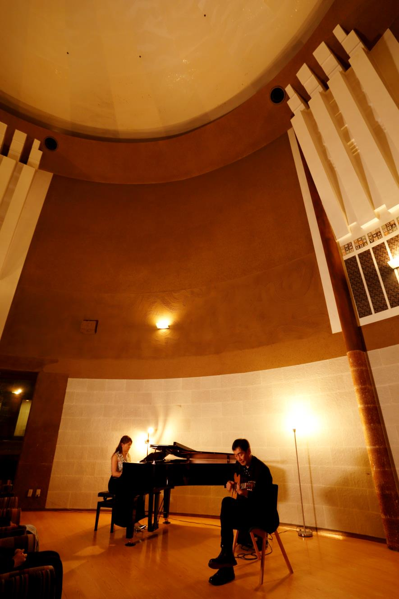
22:00. Массаж перед сном
В рёкане работал дипломированный массажист анма и сиацу. После онсэна, когда кровь разогнана, он разминает тело: перед сном это помогает расслабиться глубже, а перед ужином помогает пищеварению.
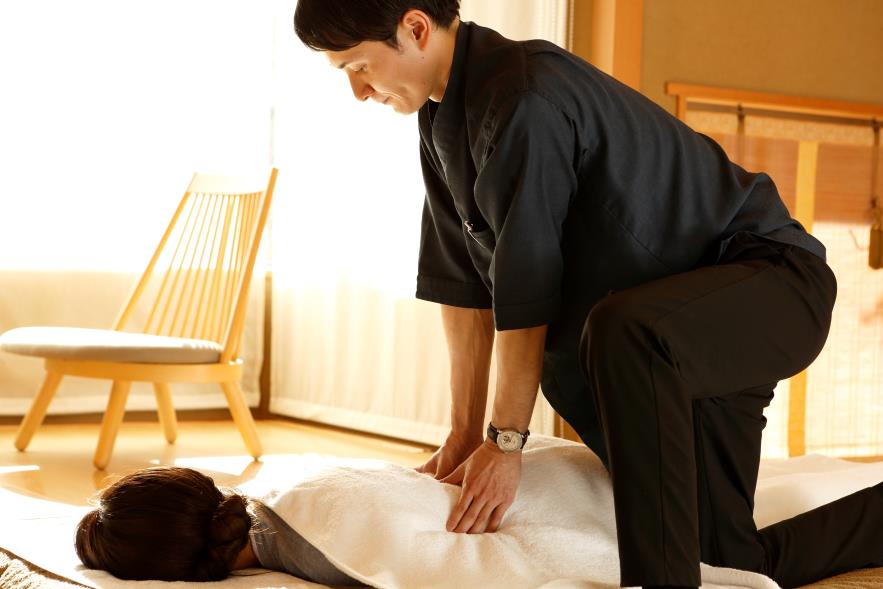
Второй день
Подъём в 6:00 и немного покоя в номере, в 6:30 снова онсэн, в 7:30 завтрак, в 12:00 выезд. Проснулись мы на удивление бодрыми. Похоже, короткое тодзи и правда лучшее лекарство для тех, кто живёт в спешке.
KAI Matsumoto
- Адрес
- префектура Нагано, Мацумото, Асама-онсэн, 1-31-1
- Телефон
- 0570-073-011 (центр бронирования KAI, 9:00–20:00)
- Номера
- 26
- Цены / Вход
- ночь с ужином и завтраком от 49 724 иен за двоих в одном номере (потребительский налог и налог на онсэн не включены)
- Заезд / выезд
- 15:00 / 12:00
- Как добраться
- от станции JR Мацумото около 15 минут на такси; от съезда Мацумото автодороги Нагано около 30 минут на машине